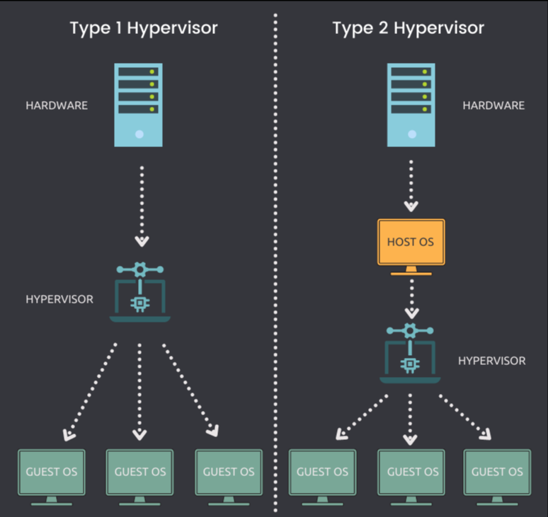

Hypervisor
[toc]
Introduction
Type 1 Hypervisor
可以本地安装并直接在物理主机上运行的Hypervisor称为Type 1 Hypervisor。
关键指标
- Type 1 Hypervisor可以直接安装在裸机系统或物理主机上。
- 它不需要先安装或可用的操作系统 (OS)，即可将自身部署在服务器上。
- 直接访问 CPU、内存、网络、物理存储。
- 硬件利用效率更高，提供最佳性能。
- 由于没有任何额外的硬件访问层，因此安全性更高。
- 每个Type 1 Hypervisor始终需要专用的物理机。
- 可以成本更高，更适合企业级解决方案。
- VMware ESXi、Citrix Hypervisor和Microsoft Hyper-V是Type 1 Hypervisor的一些示例。
Type 2 Hypervisor
无法本地安装且需要操作系统才能在物理主机上运行的管理程序称为类型 2 管理程序。
关键指标
- Type 2 hypervisor 不能直接安装在裸机系统或物理主机上。
- 它需要首先安装或可用的操作系统，以便部署自己。
- 间接访问 CPU、内存、网络、物理存储。
- 由于需要额外的层 (OS) 来访问资源，因此硬件利用率可能会降低并导致性能滞后。
- 由于主机操作系统的可用性，潜在的安全风险。
- 每个Type 2 hypervisor不需要专用的物理机。单个主机上可以有多个。
- 成本更低，更适合小型企业解决方案。
- VMware Workstation Player、VMware Workstation Pro和VirtualBox是Type 2 hypervisor的一些示例。

行业发展
截取自：基于 RISC-V 的 Type-1 Hypervisor 的设计与实现
RVirt
RVirt 是由 MIT PDOS 在 2018 年使用 Rust 开发的一个 RISC-V Type-1 hypervisor。RVirt 诞生时 RISC-V 虚拟化扩展仍然没有被提出，因此 MIT PDOS 采用了纯软件虚拟化的技术，RVirt 运行在 S-mode，客户操作系统运行在 U-mode，当客户操作系统执行特权指令或者读写 CSR 时将会陷入 hypervisor，hypervisor 会为客户操作系统维护影子状态。RVirt 可以在 QEMU virt 和 Hifive Unleased 开发板上运行 fedora 操作系统。RVirt 的优点是可以在任何实现了 M，S，U 特权级的 RISC-V 芯片上运行，缺点是性能低。
Bao-hypervisor
Bao hypervisor是一个轻量级、安全、可靠、高效并且开源的 hypervisor 解决方案，旨在为现代多核嵌入式系统提供强大的虚拟化能力。与传统虚拟化解决方案相比，Bao hypervisor 可以更好地满足嵌入式系统对实时性、安全性和可靠性等方面的要求。
Bao 的架构采用静态分区架构，并支持硬件辅助虚拟化技术。每个分区都被分配了一组硬件资源，并且这些资源在运行时不会发生变化。这种方法可以提高系统的可预测性和安全性，并减少了虚拟化开销。
Bao 是一个轻量级 hypervisor，具有小巧、高效、可裁剪等特点，并且可以提供强大的空间和时间隔离。作者进行了一些实验来评估 Bao 的性能。实验结果表明，Bao 启动速度快、内存占用率低，并且中断延迟较小。
目前 Bao 已经支持了 RISC-V 虚拟化技术并且成功在添加了 Hypervisor Extension 的 rocket chip 以及 CVA6 软核上成功运行。
Xvisor
Xvisor 是一个完整的单体式虚拟化管理程序，支持全虚拟化和半虚拟化。它旨在提供一个轻量级的虚拟化管理程序，可用于嵌入式系统，具有较小的开销和内存占用。Xvisor 主要提供全虚拟化客户机，并通过可选的 VirtIO 设备提供半虚拟化。所有核心组件都作为单个软件层运行，包括 CPU 虚拟化、客户机 IO 模拟、后台线程、半虚拟化服务、管理服务和设备驱动程序。客户操作系统运行在 Xvisor 实现者称之为 Normal vCPUs 的特权较低的环境中。
在 2019 年 Xvisor 根据当时的 RISC-V 虚拟化草案支持了 RISC-V 虚拟化，后续更新到 RISC-V Hypervisor Extension 1.0，不过目前 Xvisor 作者对于 Xvisor 已经疏于维护。
seL4
seL4 是一种基于保密性和高度安全的微内核操作系统，由澳大利亚国立大学的 NICTA（现在成为CSIRO data61）团队开发。seL4具有严格的形式化验证，保证了其内核的功能正确性和安全性。这使得seL4成为在实时和安全领域进行高度可信和高保密度的应用的理想平台。
seL4的特点包括以下几点：
- 高度安全性：seL4的内核采用严格的数学证明，保证内核的正确性和安全性。
- 微内核设计：seL4采用微内核设计，只包含操作系统最基本的功能。这使得它具有高度的可扩展性、可配置性和可移植性。
- 高性能：由于seL4是一个精简的微内核，它不会附加额外的功能和复杂度，这使得它能够在嵌入式和高性能计算领域具有优势。
- 开放源代码：seL4采用 GPLv2 开源协议，完全开放源代码。
- 应用领域广泛：由于其高度安全和可信度，seL4在许多领域中得到广泛应用，如智能网联汽车、航空航天、国防、金融、医疗等。
- 目前 seL4 已经为 RISC-V 虚拟化提供了支持。
KVM
KVM（Kernel-based Virtual Machine）是一种基于Linux内核的虚拟化技术，它允许在相同的物理硬件上运行多个虚拟机（VM），每个VM都可以运行不同的操作系统。KVM利用虚拟化技术中的硬件辅助虚拟化技术（如Intel VT和AMD-V）来提高VM性能和安全性。
KVM是一种开放源代码软件，它被许多组织和公司使用和支持，例如Red Hat、IBM、Intel等。KVM支持多种操作系统，包括Linux、Windows和BSD。此外，KVM还提供了一些管理工具，如virt-manager和virsh，使用户能够轻松创建、配置和管理虚拟机。
KVM的优点包括可靠性、高性能、高安全性、灵活性和可扩展性。它可以在不同的硬件架构上运行。另外，由于它是Linux内核的一部分，因此它保持了与Linux内核的紧密集成，可以受益于Linux社区提供的驱动程序、功能和补丁。
一些比较好的文章